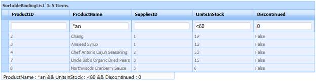

The properties used in the previous sections can be used in code (as shown in the following snippets) to implement Expression filters in ASP.NET Grid.
Using ASPX code:
|
[ASPX]
<TableDescriptor AllowFilter="True" /> <TopLevelGroupOptions ShowFilterBar="true" AllowExpressionFilter="true" ShowFilterBarTextCell="true" AllowActiveFilteringMode="true" ShowFilterStatusMessage="true" FilterStatusBarWidth="450" />
|
Using C# and VB code:
|
[C#] this.GridGroupingControl1.TableDescriptor.AllowFilter = true; this.GridGroupingControl1.TableDescriptor.TopLevelGroupOptions.ShowFilterBar = true; this.GridGroupingControl1.TableDescriptor.TopLevelGroupOptions.ShowFilterBarTextCell = true; this.GridGroupingControl1.TableDescriptor.TopLevelGroupOptions.AllowExpressionFilter = true; this.GridGroupingControl1.TableDescriptor.TopLevelGroupOptions.AllowActiveFilteringMode = true; this.GridGroupingControl1.TableDescriptor.TopLevelGroupOptions.ShowFilterStatusMessage = true; this.GridGroupingControl1.TableDescriptor.TopLevelGroupOptions.FilterStatusBarWidth = 450;
|
|
[VB]
Me.GridGroupingControl1.TableDescriptor.AllowFilter = True Me.GridGroupingControl1.TableDescriptor.TopLevelGroupOptions.ShowFilterBar = True Me.GridGroupingControl1.TableDescriptor.TopLevelGroupOptions.ShowFilterBarTextCell = True Me.GridGroupingControl1.TableDescriptor.TopLevelGroupOptions.AllowExpressionFilter = True Me.GridGroupingControl1.TableDescriptor.TopLevelGroupOptions.AllowActiveFilteringMode = True Me.GridGroupingControl1.TableDescriptor.TopLevelGroupOptions.ShowFilterStatusMessage = True Me.GridGroupingControl1.TableDescriptor.TopLevelGroupOptions.FilterStatusBarWidth = 450
|
Build and run the application. The following output will be displayed:

Figure 85: Expression filter in FilterBar ASP.NET